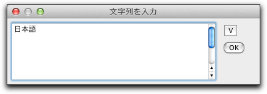

文字（テキスト）を加える

- 文字(テキスト)を加える:画面上の表示したい場所でクリックすると、 小さなウィンドウが現れ、テキストを入力するように促されます。 テキストを入力してウィンドウを閉じると、クリックした場所にテキストが表示されます。
- テキストを編集する: すでに画面上に書かれているテキストをクリックすると、再び編集ウィンドウが開き、そこに書いてあったテキストをもう一度編集することができます。 ウィンドウを閉じると、テキストは変更されています。
- 識別名を変更する: 画面上の要素をクリックすると、識別名を編集することができます。そこでその要素に新しい識別名をつけることができます。 しかし、識別名には制限もあります。 その図の中で他に同じ識別名があってはいけません。 もし、他の要素と同じ識別名をつけようとすると、警告のメッセージが現れ、識別名は変更されません。なお、識別名はインスペクタでも変更できます。
ここで、日本語を入力するにはちょっと手続きが必要です。そのままではコンピュータの入力モードを日本語入力にしても、入力ウィンドウには日本語が出ません。
まず、入力ウィンドウの右の方にある「＜」印をクリックします。すると、矢印の向きが変わって入力エリアが広がります。この状態でなら日本語入力ができます。
 |
| 日本語入力をする |
ドッキングと参照
画面上の文は最初あなたが考えているよりもずっと融通の利くものです。 2つの重要な特徴があります。: ドッキング と 参照です。
- ドッキング: 通常、テキストは作図の座標系に従って特定の位置に置かれています。 絵を拡大したり平行移動したりすると、テキストもそれに従って動きます。 だいたいはこれでよいのでしょうが、時々、違った動きをしてほしいと思うこともあります。 たとえば、あるテキストをいつも画面の左上に表示しておきたいということもあるでしょう。 そこでドッキングを用います。 動かすモードにしてテキストをドラッグして動かしてみましょう。 そして描画面の縁へ持ってくると、文字がスナップするのがわかるでしょう。 そこでマウスのボタンを離すと、そのテキストは描画面の縁にドッキングしているのです。 描画面の大きさを変更してみるとその様子がよくわかります。
テキストを点にドッキングさせることもできます。 テキストをドラッグによって動かし、点の近くに持ってくると、点にスナップします (このときその点はハイライト表示されます)． 動かすモードでその点を動かしてみれば、そのテキストは点とくっついているのがわかるでしょう。
- テキスト中への値の参照:しばしば、テキストの中のパラメータを自動的に変更したいこともあるでしょう。 たとえば、「点Aと点Bの距離は25cm」というテキストを表示することを考えてみましょう。 ここで25という数字は定まった数字ではなく、点Aと点Bとの実際の距離であるようにしたいわけです。 これを実現するために、描画面上の要素の名前や量をテキスト中で参照することができます。 Aという識別名を持った点があるとすると、
@#A」でその座標を参照することができます。 さらに、AやBという要素の識別名を変更した時にテキストがそれに従って変更されるようになるほうが便利でしょう。 そのためには、@$Aという書き方をします。 これにより識別名が参照されます。 「距離」の識別名が「dist0」であったとして、文を次のように書けばよいのです。(訳注：Cinderella.2 になって仕様が変わったのか、@$Aと書いたとき、識別名を変更すると認識されなくなります。すなわち、点Aの識別名をBに変えると、表示は Bにはならず、 A? となります)
点 @$A と点 @$B の距離は @#dist0 cm.
このとき、次の２点に注意してください。(i)@$Aは半角文字で入力しなければいけません． (ii)@$Aの前後に、半角スペース を入力しなければいけません。あるいは、@$”A" のように識別名をダブルクウォートで囲みます。 また、距離の識別名などは、「式による表示」またはインスペクタで調べます。通常は、dist0, dist1,... という名前がついています。
点や直線や2次曲線に関して、
@#をつけると値の表示を行うことができます。 点の場合は座標、直線や2次曲線は式です。点 @$A の座標は @#A
と書くと、「点Aの座標は(0, 1)」のような表示になります。
直線 @$a の式は @#a
と書くと、「直線 a の式は y=2x+1」のような表示になります。
要素から文中への参照は次の3つの方法があります。 Aを要素の識別名であるとしましょう。 このとき、
- 識別名 を参照したいときは．
@$Aと書きます。 - 定義 を参照したいときは
@@Aと書きます。 - 位置や値を参照したいときは
@#Aと書きます。
こうして生成されるテキストを「式による表示」で見ることもできます。 要素を値で表示する時の表示の仕方には幾つかオプションがあります。 (訳註：たとえば、点の座標を(1, 0)(平面座標表示)と表示するか、(1:0:1)(同次座標表示)と表示するかを選ぶことができます。) メニューから「フォーマット」を選んでください。
@を使えば、ギリシャ文字を表示することができます。 @alphaや-+@Omega+のように@のあとにギリシャ文字の名前を書いてください (ここでもやはり「@ギリシャ文字名」の前後に半角スペースが必要です)。さらに、テキストとして CindyScript のコードを書き、その結果を表示することもできます。そのための書き方は、
@{…}で、 +…+-の部分は CindyScript のコードです。たとえば、 @{sin(A.x)} は、点Aの x 座標のsinの値になります。さらに、TeX のコードを使うことができます。たとえば、
The point $P_1$ has coordinates $({x \over y},x^2)$ とすると、次の図のような表示になります。 |
| TeXによる式表示 |
TeXの書きかたについては「TeX記法」を参照してください。
クリックして参照する
関数を定義する モードのように、幾何の要素を単にクリックするだけで参照することができます。これで、ダイアログボックスに文字を入力していくのが簡単になります。他のテキストをクリックすれば、このテキストがコピーされます。
CindyScript で使う
インスペクタを用いて、文字列をボタンにすることができます。ボタンは押しボタンか、トグル動作のボタンにできます。トグルボタンは 状態を読むことができます。 CindyScript を使えば両方のボタンを設定できます。 このマニュアルの該当部分を読んでください。.
要約
画面中に文を加えたり画面中の文の編集を行う。こちらも参照してください
Page last modified on Sunday 11 of March, 2012 [05:36:31 UTC].
The original document is available at
http://doc.cinderella.de/tiki-index.php?page=TextJ